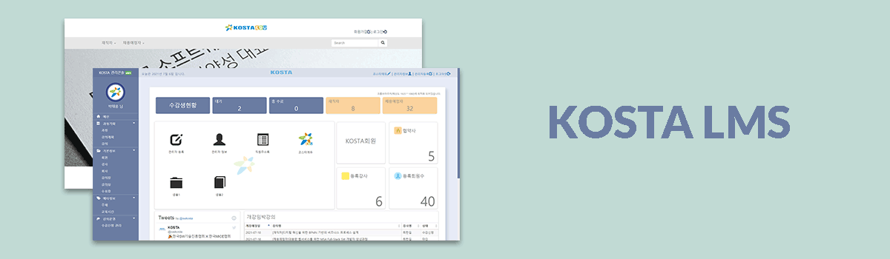
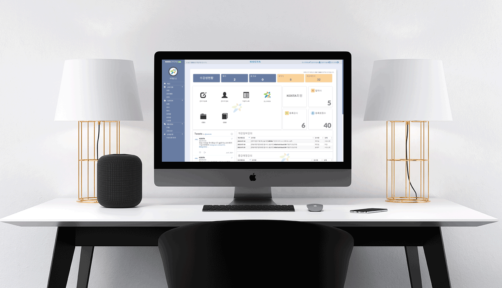
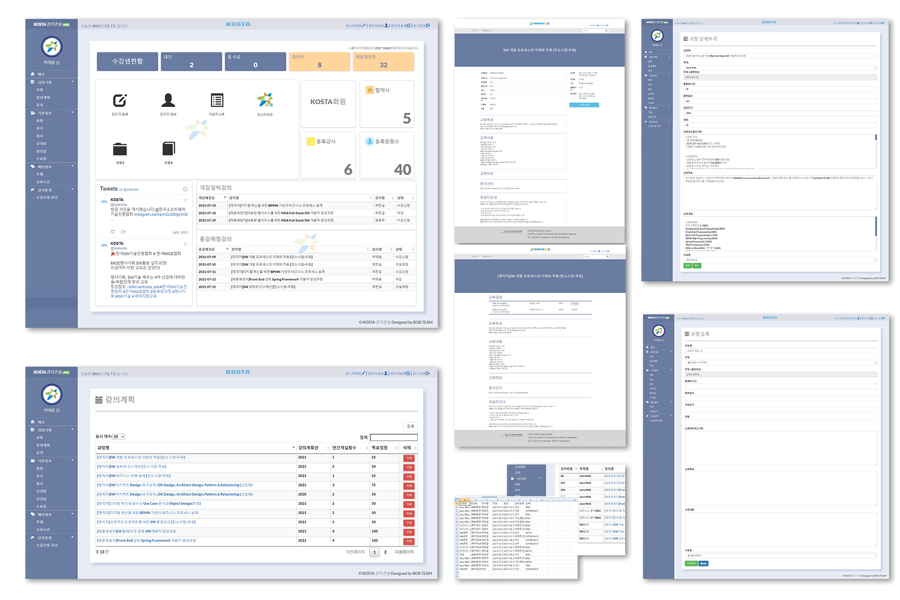

Park Taewoong
ABOUT
Project
Skills
Contact
프로젝트 소개 - KOSTA LMS

소개
프로젝트명 : KOSTA LMS
프로젝트 개요 : 수업을 듣기 위해 사용했던 코스타 홈페이지에 기술적인 부분, 구조적인 부분, 사용자의 불편한 부분들을 더 개선하고자 했습니다.
개발기간 : 2021.06.01~2021.06.30
참여인원 : 4명
개발환경 : JAVA HTML, CSS, JavaScript, jQuery, Thymeleaf, lombok, JSP, Servlet, Bootstrap, Springboot, MariaDB, github
홈페이지와 제출한 자료는 개인 담당 영역 기준으로 간략하게 소개되어 있습니다.
프로젝트 전반적인 내용과 더 상세한 소개는 PDF와 GITHUB README에 준비되어 있습니다.
팀 발표자료 :
http://sisun1225.github.io/img/project3ppt.pdf
깃허브 :
https://github.com/sisun1225/kosta_final_project

담당 영역소개
사용자 페이지 - 디자인(메인페이지 제외한 나머지)
관리콘솔 - 디자인, 메인페이지, 과정기획 전체, 기본정보(강사,회사)
관리 콘솔 사용하는 모습
(비밀번호 : 1478)
개인이 작업한 부분만 소개되어있습니다.
전체 소개는 깃허브
리드미
또는
발표자료
에 소개되어있습니다.

프로젝트 분석
분석
지금까지 배운 것들을 다양하게 잘 사용해서 구현했고
실제로 KOSTA 담당자와 미팅을 진행하며
업무 흐름과 필요한 기능들을 모두 들어보고 요구 사항 분석을 하면서 진행된 프로젝트였기 때문에
수업에 대한 복습과 응용 실무를 간접적으로 체험했다는 것에 있어서 큰 도움이 되었던 프로젝트입니다.
어려웠던 점
데이터가 중복되지 않도록 입력되어야 하는 부분이 어려웠습니다.
큰 계획을 입력 후 세부 일정을 입력하는 순서로 데이터 입력이 이루어져야 했고 모든 계획과 일정에는 이미 정해진 조건들이 많았습니다.
입력할 데이터가 많다는 것은 데이터가 중복되거나 잘못 입력되는 부분들이 많을 수 있음을 의미하기 때문에 이 부분을 어떻게 처리해야 할지에 대한 고민이 많았습니다.
이미 정해진 조건이나 입력된 데이터 들은 db에서 모두 불러와 사용자가 입력하는 것이 아니라 선택할 수 있도록 구현하거나
최종적으로 입력을 완료할 때 db에서 이미 입력된 데이터가 있는지를 바로 조회해서 안내 문구를 보여주고 입력하지 못하는 형식으로 구현했습니다.
결과적으로 데이터가 중복 입력되는 것을 막고 사용자도 더 손쉽게 데이터를 입력할 수 있게 되었습니다.
요구 사항에 맞춰서 작업을 하는 것이 어려웠습니다.
코스타 담당자분과 직접 만나서 기존에 사용하는 홈페이지에 대해 설명과 추가적으로 원하는 기능들을 종합해서
그것을 분석하고 설계를 하고 기능을 구현하는 과정을 반복하며
다양한 업무에 대한 흐름을 이해하고 파악하는 것의 중요성을 느꼈고 중요한 만큼 어려움이 많았지만
소통과 연합이 잘 이루어진 팀 안에서 의논하며 대부분 해결되었습니다.
프로젝트 마감 일정에 대한 고민이 많았습니다.
비대면 수업으로 소통의 어려움이 있었고 구현해야 할 부분들이 많았던 상황으로
소통의 어려움은 진행 일정에 영향을 주기 시작했었습니다.
하지만 2차 프로젝트 때 서로의 성향과 실력의 확인이 끝난 상태였고
이미 깃허브나 여러 소통 수단을 통해 진행 상황을 확인할 수 있었기 때문에
반복작업 등은 서로 데이터를 공유하고 진행 상황에 따라 서로에게 투입되어 도움으로써
상황적인 어려움과 기술적인 어려움들을 잘 이겨내고 마무리할 수 있었습니다.
개선사항
3차 프로젝트는 Springboot, MariaDB, Thymeleaf 등 새로운 기술과 환경에서 진행되다 보니
또 다른 기술과 환경에 적응하고 공부하는 시간이 많이 걸려서 제한된 시간안에 더 많은 것들을 구현하고 테스트하지 못해서 아쉬웠습니다.
그리고 코딩을 한다는 것이 단순히 여러 기술들을 나열한다는 것이 아니라 다양한 영역에 이해가 있어야 함을 느꼈습니다.
조금 더 기술의 본질적인 부분들을 탐구하며 자료구조, 네트워크 등등 다양한 영역에 관심을 가져야 할 것 같습니다.
목록으로 돌아가기
박태웅 | 이메일 mylove7469@naver.com | 카카오톡 sisun1225 | 깃허브 sisun1225